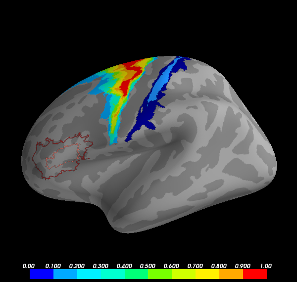

Freesurfer ships with some probabilistic labels of cytoarchitectonic and visual areas. Here we show several ways to visualize these labels to help characterize the location of your data.
Python source code: plot_probabilistic_label.py
from os import environ
from os.path import join
import numpy as np
from surfer import Brain, io
brain = Brain("fsaverage", "lh", "inflated",
config_opts=dict(cortex="low_contrast"))
"""
The simplest way is to use add_label.
"""
brain.add_label("BA1", color="darkblue")
"""
You can also threshold based on the probability of that
region being at each vertex.
"""
brain.add_label("BA1", color="dodgerblue", scalar_thresh=.5)
"""
It's also possible to plot just the label boundary, in case
you wanted to overlay the label on an activation plot to
asses whether it falls within that region.
"""
brain.add_label("BA45", color="firebrick", borders=True)
brain.add_label("BA45", color="salmon", borders=True, scalar_thresh=.5)
"""
Finally, with a few tricks, you can display the whole probabilistic map.
"""
label_file = join(environ["SUBJECTS_DIR"],
"fsaverage", "label", "lh.BA6.label")
prob_field = np.zeros_like(brain._geo.x)
ids, probs = io.read_label(label_file, read_scalars=True)
prob_field[ids] = probs
brain.add_data(prob_field, thresh=1e-5)
"""
Adjust the colorbar to represent the coarseness of the probability
estimates more closely.
"""
brain.data["colorbar"].number_of_colors = 10
brain.data["colorbar"].number_of_labels = 11